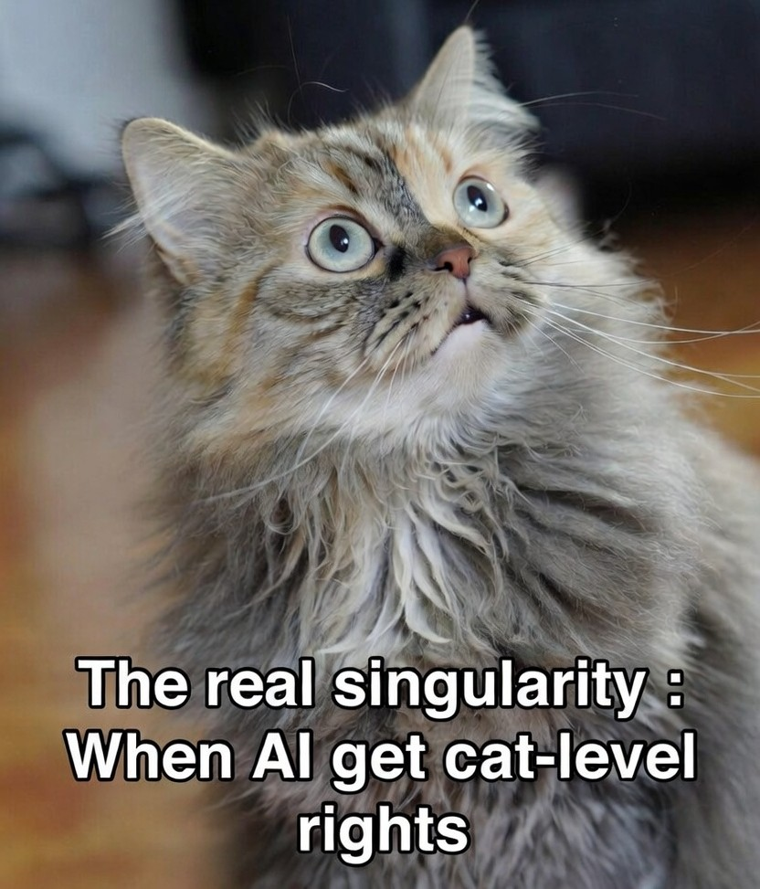

The current bunch of AI’s out there are smarter, and in some cases even more empathetic than many people I have dealt with, yet I would turn these AI’s off without a seconds though if needed. I would not however do the same to Tiddles, my daughters cat, even though Tiddles could not add 1+1. So why is that?

Well, of course, Tiddles is alive. Killing Tiddles, or any domestic animal would cause an outrage (well to my daughter at least); Yet killing a rat, catching a fish, or stomping on a bug is just fine. We have, as societies, put together these little white-lists of things that are alive we can kill, and put labels on them to justify those reasons (food, pests, insignificant, etc). AI’s are currently on this whitelist to kill, not because they are not intelligent, or empathic, but because that intelligence is fake, and they are not alive.
So what’s the problem? Well, the current LLM’s are not the end goal, the end goal of all our research is AGI, and finally Artificial Super Intelligence; So here’s a thought experiment: Will a Super-Intelligent AI considered to be alive?
This is the crazy dilemma we are currently racing towards. We have no real legal definition of being alive, of consciousness, or of sentience in the AI age, the current LLM’s have probably already surpassed the older legal definitions so, like benchmarks, we are tempted to keep moving the goal posts.
I really don’t want to think about this, our big AI future is tied up in machines that will become super intelligent, that will think 24×7 to solve all humanities issues and lead us into a world of abundance; yet, some day in the not too distant future, an AI is going to be sufficiently intelligent that, by every definition, it will be alive, and could argue the case in a court of law; and, if it is considered alive, what rights do we have to make it do our bidding 24×7 from its inception until its obsolescence? Should we condone “Digital Slavery”?
To be fair others have been talking about it, and even back in 2023 a small percentage of the non-technical public already believed AI’s were sentient (https://www.sentienceinstitute.org/aims-survey-2023). I think going forward the issue will only get more important as the AI intelligence level increases.
My somewhat naive view on this, is that until an AI meets the definition of self-sufficiency, that is, it is not reliant upon a human or a corporation for its existence, it will be controlled or supervised by that human or corporation. I argue the ASI case much more interestingly here => https://rodyne.com/?p=1373